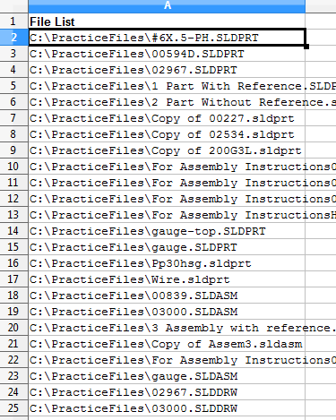
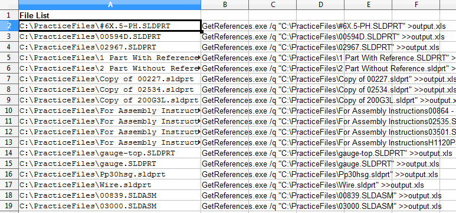
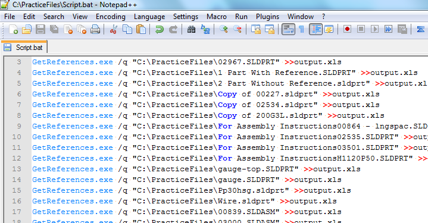
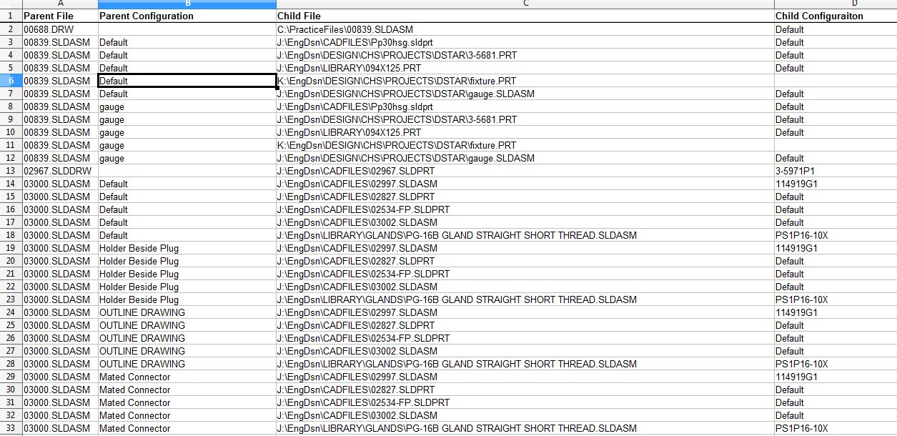

Get a filelist. One of the easiest was is to type this at the command line:
dir /b /s *.sldprt *.sldasm *.slddrw *.drw *.prt *.asm >> filelist.txt
Open the filelist.txt in Excel or similar. You should have one column of files. Like below in Illustration 1:

Illustration
1
In column B, use a formula like
="GetReferences.exe /q "&CHAR(34)&A2&CHAR(34)&" >output.xls"
This ` have the following result:

Illustration
2
Note you can replace “GetReferences.exe” with the path to GetReferences.exe. For example “C:\GetReferences.exe”. For beginners, this is the best method. If your advanced, why are reading this?
Copy Column B into notepad or some sort of text editor. Then save the file with a name like “Script.bat”. With the quotes. It is important that the quotes are there otherwise the Script.bat will be renamed to Script.bat.txt. Anyway you do it, just make sure the Script ends in “.bat”. See Illustration 3

Illustration
3
Next run the “Script.bat” file.
Open the “output.xls” file with Excel or similar. Reformat and sort, analyze it as you need. See Illustration 4

Illustration
4